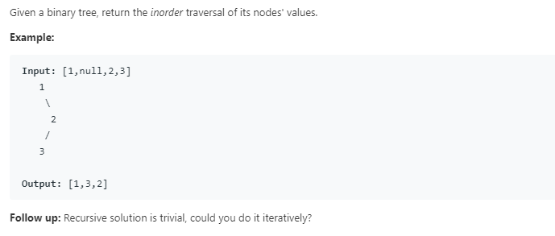
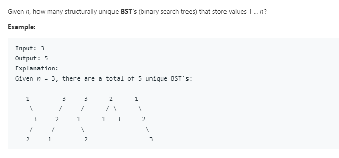
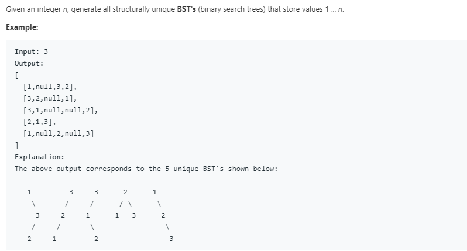
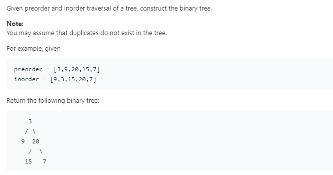
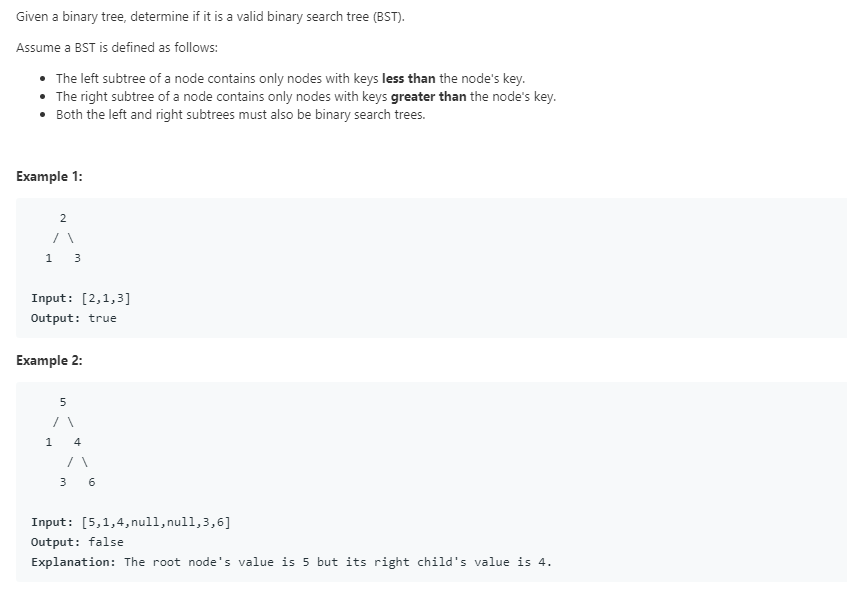

Tree-Medium
Abstract： 更新部分Medium难度 Tree相关题解
94. Binary Tree Inorder Traversal

解法一：递归法
没什么好说的，不会砍手
class Solution {
List<Integer> inorder=new ArrayList<Integer>();
public List<Integer> inorderTraversal(TreeNode root) {
if(root!=null){
inorder=inorderTraversal(root.left);
inorder.add(root.val);
inorder=inorderTraversal(root.right);}
return inorder;
}
}
解法二：迭代法
比递归法难理解一些，重点是理解好如何回溯
class Solution {
List<Integer> inorder=new ArrayList<Integer>();
Stack<TreeNode> stack=new Stack<TreeNode>();
public List<Integer> inorderTraversal(TreeNode root) {
TreeNode curr=root; //辅助接点curr，指向当前访问的TreeNode
while(curr!=null || !stack.isEmpty()){ //当前访问的节点不为空或栈不为空，说明还没遍历完
while(curr!=null){ //不断压入左节点
stack.push(curr);
curr=curr.left;
}
curr=stack.pop(); //**回溯**
inorder.add(curr.val); //将当前访问的节点加入
curr=curr.right; //如果有右节点则访问右节点，如果没有将在下一轮回溯或者结束
}
return inorder;
}
}
解法三： 莫比斯遍历
//待补全
96. Unique Binary Search Trees

解法一：递归法
-
**思路：**分别以1-n的任意整数为根，那么左右子树有哪些值是可以确定的，因此可以递归地来做
-
要点：{4,5,6,7,8}在此处可以等价于{1,2,3,4,5}，因此可以很方便的进行递归，但是在这里只是个取巧的做法
-
**缺点：**没有保存递归结果，增加了许多重复的操作，下一个解法考虑对结果进行缓存
class Solution {
public int numTrees(int n) {
if(n<=1)return 1; //特殊情况，以及递归的基准
int uniqueNum=0;
for(int i=1;i<=n;i++){uniqueNum+=numTrees(i-1)*numTrees(n-i);} //递归左右区间的乘积
return uniqueNum;
}
}
解法二：记忆化递归
直接递归的缺点是重复递归很多地方，所以需要剪枝
class Solution {
public int numTrees(int n) {
int[] dp=new int[n+1];
return dynamicNumTrees(n,dp);
}
public int dynamicNumTrees(int n,int[] dp){
if(n<=1){return 1;}
if(dp[n]!=0){return dp[n];} //加入缓存
for(int i=1;i<=n;i++){dp[n]+=dynamicNumTrees(i-1,dp)*dynamicNumTrees(n-i,dp);}
return dp[n];
}
}
95. Unique Binary Search Trees II

解法一：递归法
和上题类似的递归思路，不过注意root的创建时机
class Solution {
public List<TreeNode> generateTrees(int n) {
if(n==0)return new LinkedList<TreeNode>(); //特殊情况
return generate(1,n);
}
public List<TreeNode> generate(int lo,int hi){
List<TreeNode> BSTs=new LinkedList<TreeNode>(); //注意ArrayList不能加入null
if(lo>hi){BSTs.add(null);return BSTs;} //加入null
if(lo==hi){BSTs.add(new TreeNode(lo));return BSTs;} //递归边界
for(int i=lo;i<=hi;i++){
List<TreeNode> leftList=generate(lo,i-1);
List<TreeNode> rightList=generate(i+1,hi); //分别取得左右子树的递归结果
for(TreeNode leftRoot:leftList){
for(TreeNode rightRoot:rightList){
TreeNode root=new TreeNode(i);//root应该在循环体内new，否则会和上一轮的混淆
root.left=leftRoot;
root.right=rightRoot;
BSTs.add(root);
}
}
}
return BSTs;
}
}
解法二：记忆化递归
//这是啥?
105. Construct Binary Tree from Preorder and Inorder Traversal

解法一：递归法
这题的重点是如何分别在inorder和preorder中划分左右子树
- preorder的头部是root
- **inorder如何划分：**在inorder中找到root，那么在此之前的为left，之后的为right
- **preorder如何划分：**inorder中，left-root即为left的长度leftSize，由此推出以下关系
//左子树
next_p_lo=p_lo+1;
next_p_hi=p_lo+leftSize;
next_i_lo=i_lo;
next_i_hi=i_lo+leftSize+1;
//右子树
next_p_lo=p_lo+leftSize+1;
next_p_hi=p_hi;
next_i_lo=i_lo+leftSize+1;
next_i_hi=p_hi;
class Solution {
public TreeNode buildTree(int[] preorder, int[] inorder) {
int len=preorder.length-1;
return build(preorder,inorder,0,len,0,len);
}
public TreeNode build(int[] preorder,int[] inorder,int p_lo,int p_hi,int i_lo,int i_hi){
if(p_lo>p_hi || i_lo>i_hi){return null;} //越界判定 & 递归结束
int leftSize=0;
for(int i=i_lo;i<=i_hi;i++){ //在inorder中找到root并算出leftSize
if(inorder[i]==preorder[p_lo]){leftSize=i-i_lo;}
}
TreeNode root=new TreeNode(preorder[p_lo]); //依据已有关系，构造根节点和左右子树
root.left=build(preorder,inorder,p_lo+1,p_lo+leftSize,i_lo,i_lo+leftSize-1);
root.right=build(preorder,inorder,p_lo+leftSize+1,p_hi,i_lo+leftSize+1,i_hi);
return root;
}
}
<p class="code-caption" data-lang="" data-line_number="frontend" data-trim_indent="backend" data-label_position="outer" data-labels_left="Code" data-labels_right=":" data-labels_copy="Copy Code"><span class="code-caption-label"></span></p>
98. Validate Binary Search Tree

解法一：中序遍历
判断BST，容易简单认为是只要左子树比根节点小，右子树比根节点大，以此递归就行
但是，上述策略忽略了一点：左子树<右子树
因此必须保证这一点，考虑到BST的特性：中序遍历，得出以下解法
class Solution {
List<Integer> inorder=new ArrayList<Integer>();
public boolean isValidBST(TreeNode root) {
inorder(root);
for(int i=1;i<inorder.size();i++){ //检查中序遍历结果是否顺序即可
if(inorder.get(i)<=inorder.get(i-1))return false;
}
return true;
}
public void inorder(TreeNode root){
if(root!=null){
inorder(root.left);
inorder.add(root.val);
inorder(root.right);
}
}
}
解法二：迭代法
边迭代边检查，还可以写成递归法，不过同理就不写了
class Solution {
Stack<TreeNode> stack=new Stack<TreeNode>();
public boolean isValidBST(TreeNode root) {
if(root==null)return true;
TreeNode curr=root;
Integer val=null; //注意这里要用Integer而不是int，因为可以用null,不然无论设成什么都能被卡掉
while(curr!=null || !stack.isEmpty()){
while(curr!=null){
stack.push(curr);
curr=curr.left;
}
curr=stack.pop();
if(val!=null && curr.val<=val){return false;} //错误判定
val=curr.val;
curr=curr.right;
}
return true;
}
}